Сверка с эталоном — контрольные точки 1–2
Ветка redesign, в main ничего не уходило. Покрыты шапка, герой, витрина
направлений и три шага подбора. Слева design/reference.html, справа сайт, оба на 1440 px, кадры режутся по границам секций
самих страниц. Пересобрать: node tools/shoot-compare.mjs.
- 38 элементов эталона в этих секциях
- перенесено 27
- перенесено иначе 11
- не перенесено 0
- Сценарии интерфейса: 14 из 14 — 11 прежних (две разрешённые правки) и 3 новых
- Модульные тесты: 82 из 82
1. Шапка
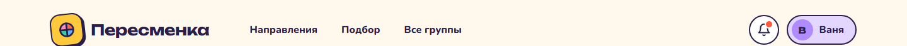
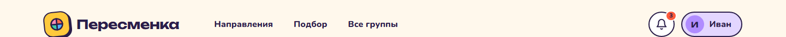
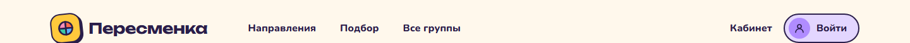
- У колокольчика вместо красной точки — число непрочитанных.
- Гостю не показываем чужое имя: на месте профиля та же сиреневая пилюля «Войти» и ссылка «Кабинет».
2. Герой
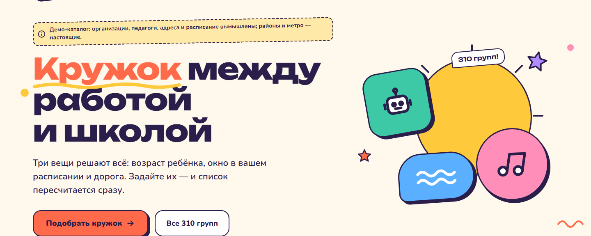
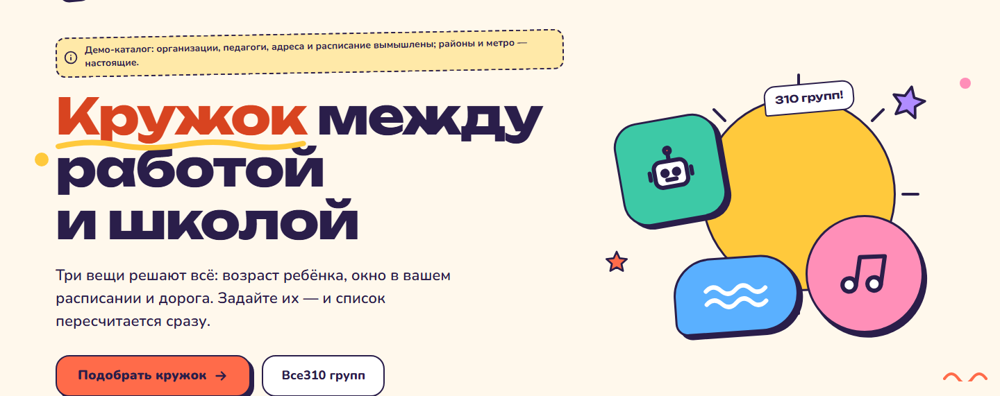
- «Кружок» темнее:
#D84420вместо#FF6B4A. У эталона 2,67:1 на бумаге — не проходит даже порог крупного текста. - «310 групп» в кнопке и пузыре считается из каталога, со склонением.
3. Витрина направлений
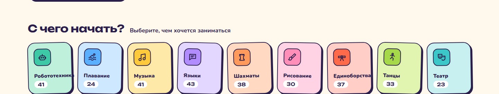
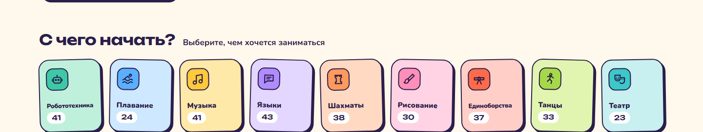
- «Робототехника» и «Единоборства» в эталоне обрезаны краем плитки; здесь помещаются целиком — на 2 px мельче и с плотным трекингом.
- Точка бирюзового конфетти внизу слева — от следующей секции, «Подбор», ещё в старом виде.
4. Подбор за три шага
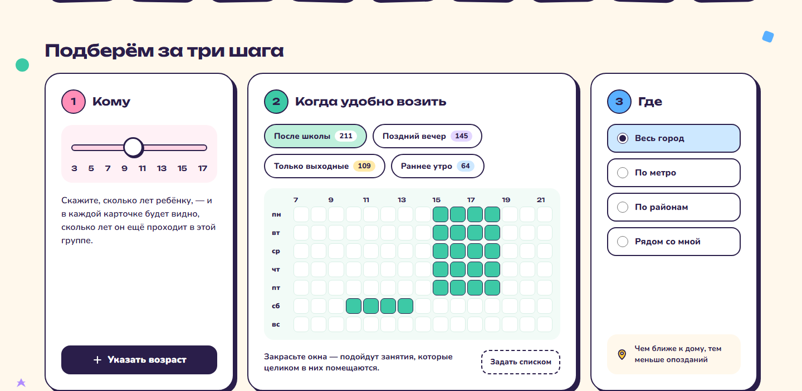
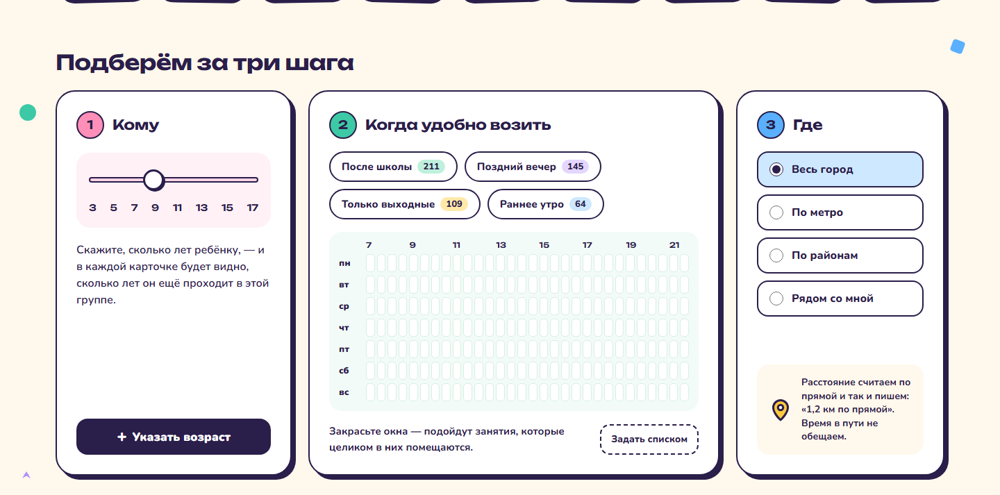
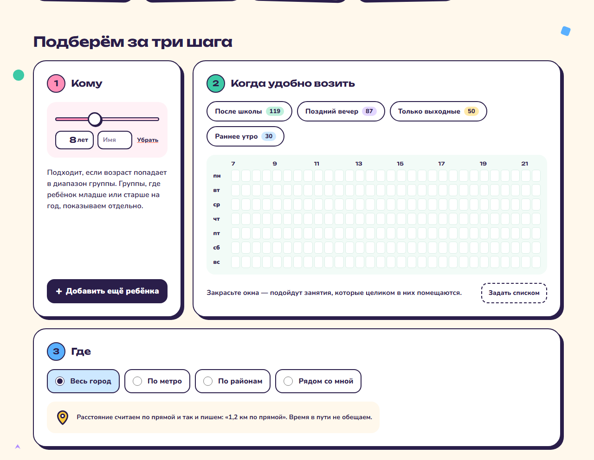
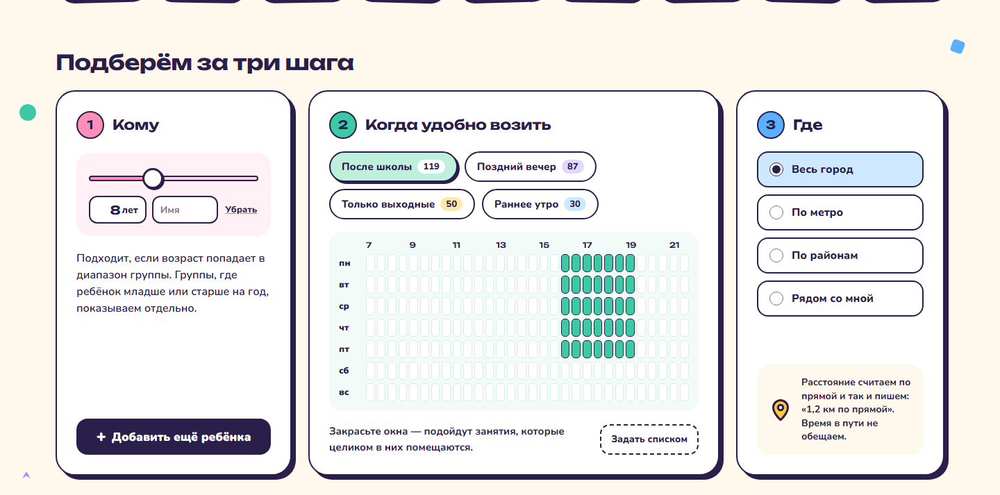
- В сетке 30 получасовых колонок, а не 15 часовых: правило «занятие целиком в окне» считается с шагом 30 минут, часовая сетка его огрубила бы.
- Ползунок возраста настоящий — у каждого ребёнка свой, рядом поле с числом. Пока детей нет, на подложке нарисована шкала, как в эталоне.
- Числа на пресетах живые. При пустых фильтрах они ровно как в эталоне — 211 / 145 / 109 / 64; с ребёнком 8 лет — 119 / 87 / 50 / 30.
Чек-лист элементов эталона
| Секция | Элемент эталона | Статус | Как и почему |
|---|---|---|---|
| Шапка | Знак: жёлтый квадрат 48 px, наклон −6°, четырёхцветный «пирог» | перенесено | SVG знака взят из эталона как есть. |
| Шапка | «Пересменка», Unbounded 700, 24 px | перенесено | На телефоне 19 px. |
| Шапка | Меню пилюлями: Направления · Подбор · Все группы | перенесено | Якоря ведут на #napravleniya, #podbor, #gruppy, как в эталоне. Ниже 960 px меню скрыто: три блока и так идут подряд. |
| Шапка | Колокольчик в белом круге 48 px с красной точкой | перенесено иначе | Вместо точки — число непрочитанных: оно уже было и информативнее. Появляется только у вошедшего: гостю не о чем уведомлять. |
| Шапка | Профиль: сиреневая пилюля, круг с буквой, имя | перенесено иначе | У вошедшего — буква и имя из его профиля. У гостя та же пилюля с силуэтом и словом «Войти», рядом «Кабинет»: показывать гостю чужое имя нечестно. |
| Холст | Конфетти: жёлтая и розовая точки, коралловая волна | перенесено иначе | Привязаны к центру холста 1440, как в эталоне. Ниже 1200 px скрыты: без полей налезали бы на текст. Остальные четыре штуки — в следующих секциях. |
| Герой | Плашка демо: жёлтая, пунктир, наклон −1°, значок «i» | перенесено | Первая строка героя, над заголовком. На телефоне без наклона. |
| Герой | Заголовок: Unbounded 800, 72 px | перенесено | 60 px ниже 1200, 52 — ниже 960, 34–44 на телефоне. |
| Герой | «Кружок» кораллом #FF6B4A | перенесено иначе | #D84420, 4,17:1 вместо 2,67:1. Оттенок тот же, проходит порог крупного текста. |
| Герой | Жёлтый росчерк под «Кружок» | перенесено | Та же кривая SVG. |
| Герой | Подзаголовок 22 px, 600 | перенесено | Текст эталона. |
| Герой | Кнопка «Подобрать кружок →»: коралл, тень 5 px | перенесено | Ведёт к подбору. Нажатие вдавливает кнопку в тень. |
| Герой | Кнопка «Все 310 групп» | перенесено | Число — размер каталога со склонением, не зависит от фильтров. |
| Герой | Иллюстрация: солнце, лучи, робот −10°, нота +8°, волна −4°, две звезды | перенесено | По координатам эталона, масштабируется целиком. Ниже 960 px уходит над текстом. На телефоне — компактная версия из трёх фигур (робот, нота, звезда) справа от заголовка, в пустом месте у коротких строк: первый экран от неё не выше. |
| Герой | Пузырь «310 групп!», наклон −5° | перенесено | Число из каталога. |
| Направления | «С чего начать?» 30 px и подзаголовок в строку | перенесено | На телефоне подзаголовок переносится под заголовок. |
| Направления | Сетка в 9 колонок, зазор 16 px | перенесено | 5 колонок ниже 1200 px, лента со scroll-snap на телефоне. |
| Направления | Плитка 150 px, радиус 22, тень 4 px, наклоны −1,5° / +1° / −1° / +1,5° | перенесено | Наклоны по той же последовательности. При reduced-motion наклон остаётся, выпрямление под курсором отключается. |
| Направления | Значок 46 px в насыщенном квадрате | перенесено | Пиктограммы эталона заменили прежние во всём проекте, включая статические страницы. |
| Направления | Имя, Nunito 900, 15 px | перенесено иначе | Длинные имена помещаются целиком: у «Робототехники» и «Единоборств» 13 px и трекинг −0,4 вместо 15 px. В геометрии эталона на имя 92 px, а слово даже так занимает 96, поэтому боковые поля плитки 13 px вместо 16. Девять колонок — от 1430 px, уже — пять, ниже 1024 — лента. Мягкие переносы остались запасным вариантом на случай крупного шрифта. В эталоне оба слова просто обрезаны краем плитки. |
| Направления | Число в белой пилюле, Unbounded 600 | перенесено | Число живое — сколько групп даст выбор. У выбранной плитки пилюля тёмная, у пустой плитка гаснет. |
| Направления | Плитки — ссылки <a href="#"> | перенесено иначе | Кнопки с aria-pressed: плитка включает фильтр на этой же странице, а не ведёт на другую. Скринридер слышит «нажата / не нажата». |
| Подбор | «Подберём за три шага», Unbounded 30 px | перенесено | На телефоне скрыт: там подбор живёт в шторке, и заголовок стоял бы над пустым местом. |
| Подбор | Три карточки 340 / гибкая / 300, зазор 24 | перенесено иначе | Так — от 1360 px. Уже средняя колонка сжимает сетку недели до ячеек меньше 11 px, поэтому шаги 1 и 2 рядом, шаг 3 во всю ширину под ними. Ниже 1024 — шторка, шаги стопкой. |
| Подбор | Карточка шага: белая, обводка 2,5, радиус 28, тень 6 px, поля 28 | перенесено | В шторке тень 4 px и поля 20. |
| Подбор | Номера в кругах 40 px: розовый, бирюзовый, голубой | перенесено | Цифры скрыты от скринридера: порядок и так понятен по заголовкам. |
| Подбор | Заголовки «Кому», «Когда удобно возить», «Где», 20 px | перенесено | |
| Шаг 1 | Розовая подложка с ползунком и шкалой 3…17 | перенесено иначе | Ползунок настоящий, у каждого ребёнка свой, рядом поле с числом: можно напечатать и 2, и 18. Пока детей нет — нарисованная шкала, как в эталоне. |
| Шаг 1 | Текст «Скажите, сколько лет ребёнку…» | перенесено | Когда возраст задан, на его месте правило про «младше или старше на год». |
| Шаг 1 | Тёмная кнопка «+ Указать возраст» внизу карточки | перенесено | С первым ребёнком становится «+ Добавить ещё ребёнка», после четвёртого исчезает. |
| Шаг 2 | Четыре пресета-пилюли с цветными числами, выбранный — мятный | перенесено | Числа живые: сколько групп даст пресет. Повторное нажатие снимает окно. |
| Шаг 2 | Недельная сетка на мятной подложке, скруглённые ячейки, закрашенные — бирюзой | перенесено иначе | 30 получасовых колонок вместо 15 часовых: правило попадания в окно считается по 30 минут. Протяжка мышью, стрелки и пробел с клавиатуры. Ниже 768 px сетки нет, остаётся список. |
| Шаг 2 | Подписи часов через два и дней недели | перенесено | |
| Шаг 2 | Подпись «Закрасьте окна…» и пунктирная «Задать списком» | перенесено | Раскрывает список «дни + с какого часа до какого» — он же текстовая замена сетки. |
| Шаг 3 | Четыре режима пилюлями 52 px, выбранный — голубой | перенесено | Внутри настоящие радиокнопки. Списки метро, районов и «рядом со мной» раскрываются в той же карточке: в эталоне их нет. |
| Шаг 3 | Подсказка с жёлтой меткой внизу карточки | перенесено иначе | Вместо «Чем ближе к дому, тем меньше опозданий» — «Расстояние считаем по прямой и так и пишем». Сайт не знает, где дом и сколько ехать; про расстояние по прямой говорит честно. |
| Холст | Конфетти у шагов: бирюзовый круг, голубой квадратик, сиреневая звёздочка | перенесено | От 1200 px, как и остальное конфетти. |
| Подбор | Подбор — форма прямо на странице | перенесено иначе | На телефоне и планшете весь подбор — шторка: открывается кнопкой героя или полосой «Фильтры», сверху пилюли направлений, внизу липкая «Показать N групп». |
Проверки
- Контраст новых пар: профиль — чернила на
#E3D6FF, 11,1:1. Буква на#B08CFF— 5,8:1. Плашка демо — 12,6:1. Счётчик колокольчика на#FF5A3C— 4,9:1. «Кружок» — 4,17:1, это крупный текст, порог 3:1. - Фокус с клавиатуры проверен настоящими нажатиями Tab: ссылка «к результатам» → знак → три пункта меню → Кабинет → Войти → две кнопки героя → плитки. На каждом кольцо 3 px с отступом 4 px.
- Переливы по ширине: 0 на 1440, 1430, 1429, 1366, 1280, 1024, 768, 390 и 360 px. Имена в плитках везде в одну строку.
- Сценарии интерфейса (
npm run test:ui): 13 из 13. Правок в прежних сценариях две, обе разрешены: прокрутка перед открытием шторки и снятая метка todo у демо-сохранения.
Телефон
В эталоне телефона нет — это решение в том же языке. Нижняя коралловая полоса «Фильтры» и всё ниже плиток пока в старом виде: это следующие секции.
Полоса «Фильтры» на первом экране не показывается: она дублирует кнопку «Подобрать кружок». Появляется, когда эта кнопка уходит за край, и прячется, когда та снова видна. Линии нет; под полосой в конце страницы — продолжение тёмного подвала, последняя ссылка над ней. Липкая панель «310 групп / Сортировка» — ещё старая, это секция результатов.
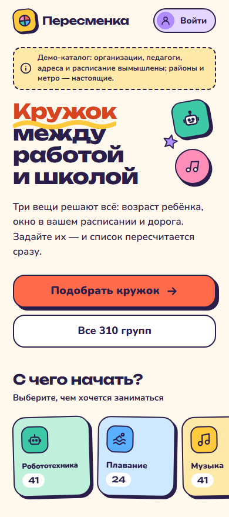
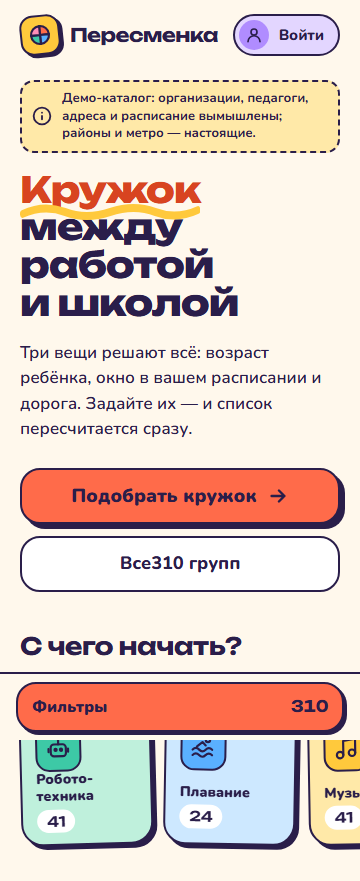
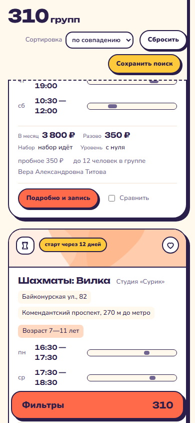
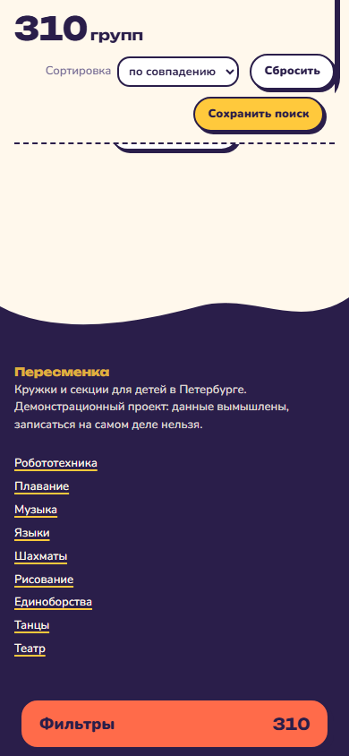
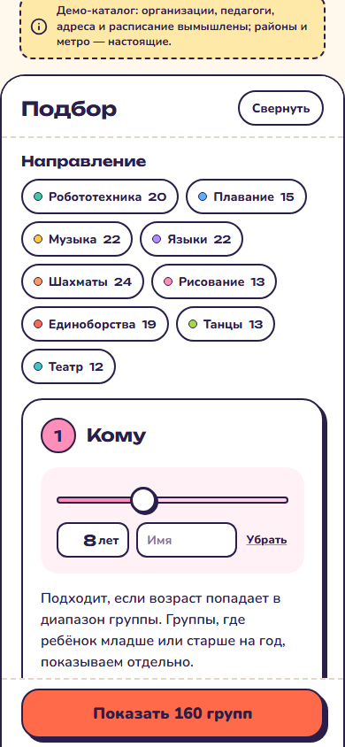
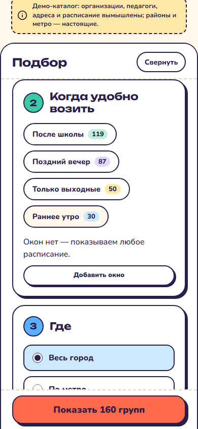
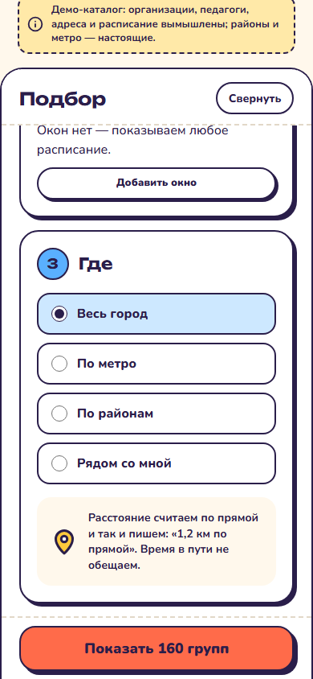
Правки после первого просмотра
- «Все310 групп» — исправлено. Голый текст во флекс-кнопке становится отдельными элементами, и флекс срезал пробел на краю. Подпись теперь один элемент. Проверено измерением на 1440, 960, 390 и 360: зазор между «Все» и числом везде 5 px, как между словами.
- Полоса «Фильтры» на телефоне — отложено до шторки, как вы и сказали: нижний отступ страницы под её высоту и без линии.
- Подзаголовок на 360 — не скрыт, лежит под полосой; см. раздел «Телефон».
Правки после второго просмотра
- Полоса «Фильтры» появляется, только когда кнопка героя за краем экрана (IntersectionObserver), и прячется, когда та видна. Пока спрятана — недоступна и с клавиатуры. Линии нет, место под полосу оставлено внизу подвала. На узком экране кнопка «Подобрать кружок» теперь сама открывает шторку: её якорь вёл в пустой #podbor. Фокус после закрытия шторки возвращается тому, кто её открыл.
- Сценарий шторки сначала прокручивает страницу — единственная разрешённая правка. Проверка не ослабла: шторка открывается, фильтр применяется, число совпадает, фокус возвращается. Новое поведение полосы — отдельный новый сценарий.
- Демо-режим: «Сохранить поиск» и сердце на карточке больше не просят войти. Изменения живут до закрытия вкладки и видны в /lk/?demo=1. Сценарий снят с todo, добавлен сценарий «сохранённое видно в демо-кабинете».
- Компактная иллюстрация на телефоне: три фигуры справа от заголовка, первый экран не вырос.
- Длинные имена целиком на всех ширинах — проверено измерением на 1440, 1430, 1429, 1366, 1280, 1024, 768, 390 и 360 px.
- Попутно найдено измерением: на 1366 и 1280 px страница была шире экрана на 19 и 62 px — коралловая волна-конфетти стояла за правым краем. Слой конфетти теперь сам обрезает вылезшее. На 768 px длинные имена ломались в пяти узких колонках — там теперь лента.
Что дальше
Результаты с карточками и блоками «обоих сразу» и «почти подходит», потом подвал с волной, статические страницы и кабинет. На каждом шаге — те же сценарии.